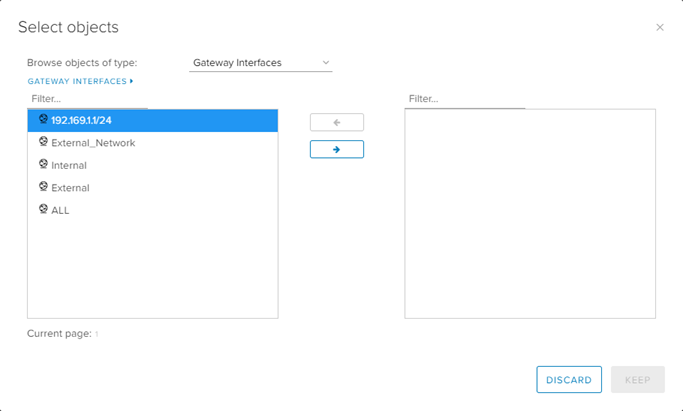
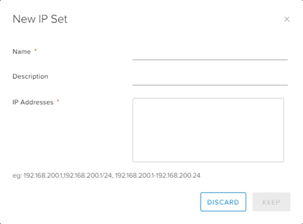

How to create firewall rules
Overview
VMware Cloud Director provides a fully featured layer 3 firewall to control transit from inside to outside security boundaries, and within the various VDC networks you create.
When you specify networks or IP addresses, you can use:
An individual IP address
IP ranges separated by a dash (
-)A CIDR, for example,
192.168.2.0/24The keywords
internal,externalorany
Note
For security reasons, you should ensure that the firewall is always enabled.
Creating firewall rules
To create a firewall rule:
In the VMware Cloud Director Virtual Data Center dashboard, select the VDC that contains the edge gateway in which you want to create the firewall rules.
In the left navigation panel, under Networking, select Edges.

On the Edge Gateways page, select the edge that you want to configure and click Services.

On the Edge Gateway page, select the Firewall tab.
On the Firewall Rules page, click the + button to add a new row to the firewall rules table.

In the row for your new rule, select the Name field and enter a name for the rule.

Note
When you first create a rule, it's set to Any, Any, Any, Accept, as shown above. We strongly advise that you do not use these default settings for any firewall rule as this allows all traffic through.
Select the Source and Destination fields and specify the source and destination addresses for the firewall rule.
To specify an IP address or range, click IP and enter the appropriate Value. When you're done, click Keep.

To specify a group of VMs or IP addresses, click + and select the desired objects. When you're done, click Keep.

If you're likely to reuse a the same group of source or destination IP addresses in multiple rules, select the Grouping Objects tab and click + to create an IP set. You can then select this IP set in the Select objects dialog box.

Select the Service field and click +.
In the Add Service dialog box, specify the Protocol, Source Port and Destination Port for the rule. When you're done, click Keep.

Select the Action field, and from the list select whether the rule is an Accept or Deny rule.
If you have a syslog server configured, select the Enable logging check box.
For more information about syslog servers, see How to access syslog data for your edge gateway.
Click Save changes.

Example
A common use case for a firewall rule is to allow SSH through from the internet. The following example uses allocated public IP addresses.
For VDCs in the Assured OFFICIAL security domain, you're assigned five public IP addresses
For VDCs in the Elevated OFFICIAL security domain, you're assigned three PSN IP addresses
In the example below, the source is any (any IP address within the VDC). The source port is also any. The destination is a public IP address and the destination port is 443 for HTTPS.

Next steps
In this article you've learned how to create firewall rules. For other edge gateway configuration tasks, see:
Feedback
If you find a problem with this article, click Improve this Doc to make the change yourself or raise an issue in GitHub. If you have an idea for how we could improve any of our services, send an email to feedback@ukcloud.com.